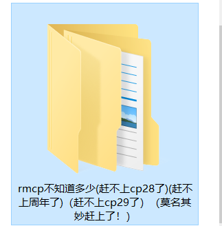
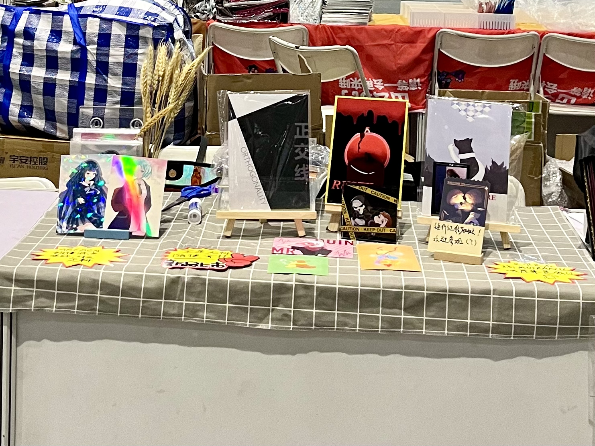
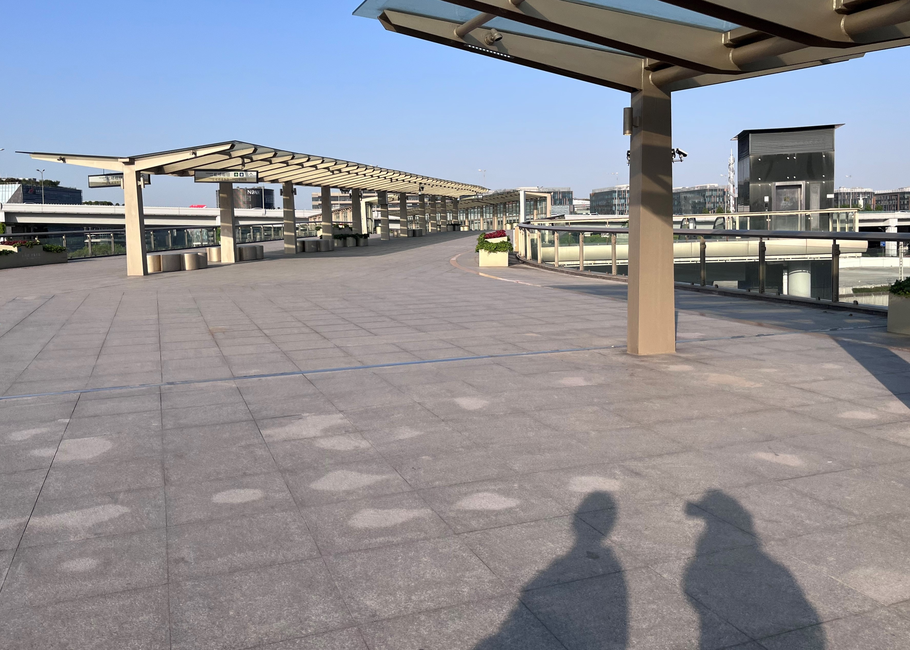
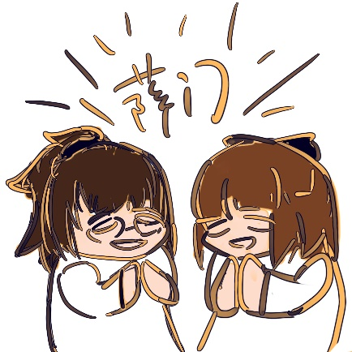
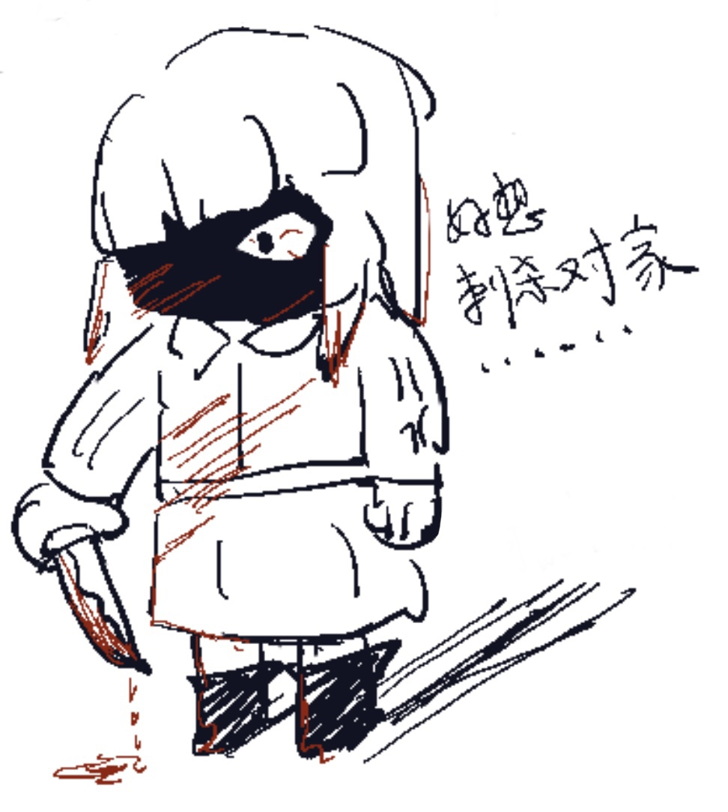
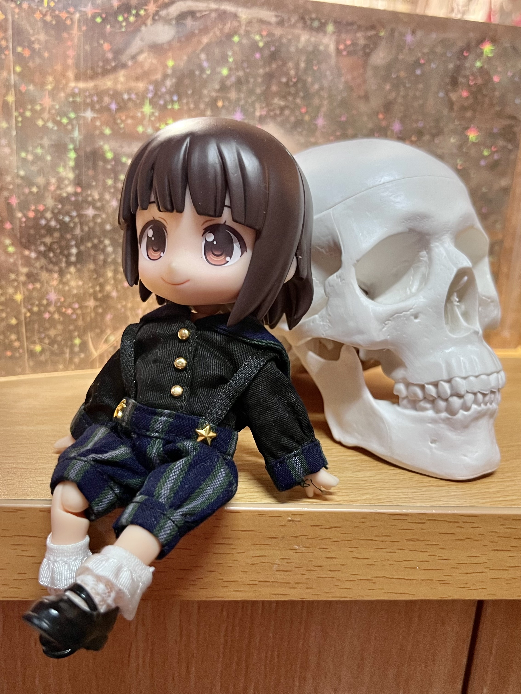
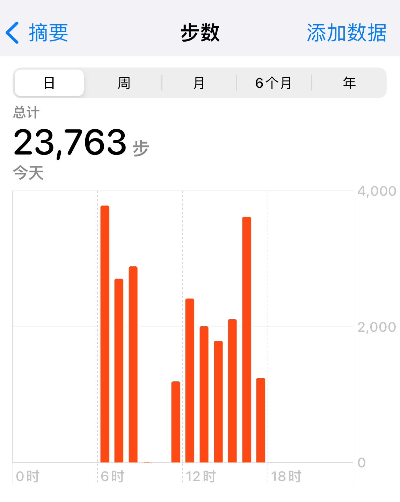

首先 让我们恭喜cp29在2023年终于结束了它反复横跳的一生（鼓掌
然后再恭喜jjpd在这命途多舛的一届里以同样曲折的方式喜提了第一次摊主 给我cp整了点活 以及居然是不孤独传说 令人感动
其实这次没拍多少照片 所以大概基本上就是布展日+day1的混乱碎碎念 可能含有极高的攻击性 我的建议是ow人不要看
嘴对家是洁癖的一部分不爽不要玩.jpg
本来想画clog的 但是实在太累了 还是算了 摸
05.01
12：00 A.M.
首先，虽然可能会一上来就开始偏题，但还是不得不在开始之前先简要讲讲jjpd申摊cp29跌宕起伏的前因后果（
既然如此，那就不得不提到本次jjpd参展的核心目的：用《溺于火》给我cp申个摊然后在愿望清单（？）上打勾（
那么 问题来了 这篇嚎了500年的哨向au是从什么时候开始写的呢（
答：2020年哒！
没有窗到第四年真的是令人感动（
这时候就该放上整个dif项目（？）的离谱爆笑文件夹了

而且 怎么说呢 就是在cp29反复横跳的这几年里 每次看到申摊开启的通知 jjpd都是：只要能写完 你敢办我就敢申
然后双双鸽了（。）
虽然有点缺德 但真的很好笑 我和cp比持久（不是
相关的前情提要就说到这里 毕竟如果要把写dif的心路历程也一并讲出来的话这篇东西就会变成究极jjpd发病现场 所以还是回归正题吧！
首先 因为是先和亲友一起从学校到酒店之后下午再去布展 所以在食堂吃完午饭之后就准备动身 顺便在全家购置了第二天军训（？）要用的干粮 只能说 参过一次cp就会有这种血泪经验（
到了酒店发现面积意外的大 大概这就是虹桥吧 在市区呆习惯了才会真正意识到虹桥其实也是郊区的事实 然后再一次深深地感受到 闵行是真的荒凉
遥想当年半夜两点起来拼车去cp25 只能说 令人感叹
办完入住就直接拖着行李去了房间 不得不说 比我想象中要大好多（ 该说是因为家具除了床之类的必要设施就只有一大张沙发所以才显得空吗 但怎么说呢 看到宽敞的房间心情确实会变好（什么东西
因为当天巨热无比而且我们两个人的东西加起来也完全不算多 所以放完行李就直接在酒店开摸等到下午才出门 在沙发上进行快乐的二次元聊天 好爽！而且突然发现草原来你也是胶佬 于是后半段话题一转刚大木 笑死
钢之魂 燃起来了！
02：30 P.M.
到了会场 最大的感受就是：好 大
之前一直听闻各种四叶草吐槽以及路线攻略但是始终没有非常直观的感受（意思是真的很难想象要上楼的展厅是什么样子） 走到底下开始找入口的时候才意识到 草 真的好大
而且 就 cp29只用了二楼的馆 还没用全（
震撼jjpd一整年（
既然要开始布展了 那么就不得不再插入一段前情提要 也就是关于jjpd整个摊位号的来龙去脉 又名 冷cp被cpp大手一挥塞进热门中间这件事（
首先 jjpd对于我cp有多冷这件事非常有自知之明 而且我本人又是个可悲的洁癖 且ow这几年各种破事基本上就是突出一个越来越凉
所以当时提交摊位的时候jjpd非常识相地选了电子游戏衍生专区 想着我绕着热门走总不会有事吧
所以出摊位号的时候jjpd完全没有意识到有什么不对
直到那天半夜cpp终于发了场地图 jjpd缩在床上有些紧张地开始翻看高糊场地图：捌号馆 捌号馆 A区应该在边上所以在这……
然后看到那片的专区赫然写着四个虽然已经糊成一片像素但对于jjpd这种自带强力雷达的人来说已经足够认清的大字
要不是因为舍友都睡了 jjpd肯定会直接开始用毕生所学开始问候cpp官方（
他妈的 也太贴心了吧 已经不知道该说什么了
然后这个时候就是jjpd还怀揣着一点侥幸心理 还想着 啊 有没有可能 ow专区在电子游戏衍生旁边 然后我只是刚好在那个交界处呢
翻开壹号馆的高清大图：噢 行吧 原来在这 我在做什么梦
然后绝望的jjpd就开始用那个高糊场地图数同样高糊的摊位号 唯一欣慰的大概就是 摊的位置还算边缘 没有落到最糟的结果（
然后突然发现九分米的摊就在隔壁的隔壁 不过这就是后话了
这个时候的jjpd已经完全陷入了一种 虽然没有临时疯狂但也快了的状态 整个人都不知道在干嘛 终于刷出了高清大图给自己判了死刑后开始哀莫大于心死在脑内构想各种崩溃场面以及可能会看到哪些对家横幅（后面冷静了一点意识到有可能是背对背坐着心情也稍微平静了一点 不过那时候其实jjpd的心理状态也已经快要消耗殆尽就是了
也许对jjpd这种人来说 最好的方法就是不要申请摊位（
毕竟jjpd对自己的定位一直都是在村子边缘鼓捣奇怪东西的奇怪老头 我会排斥融入整个群体这件事也很正常吧（
然后jjpd就在这种辗转反侧中捱到了一点半 最后怀着破罐破摔的心情 用oc展区就在旁边以及离出入口近这种事勉强安慰自己沉沉睡去（
于是 到了展区之后 jjpd就开始目不斜视地直奔摊位开始进行一个摊的摆 值得庆幸 当时周围摊主基本上都还没来 不过事实上 到了后面jjpd就算没有主动去忽略周围的各种动静 机体过热红温（什么）这件事也让jjpd没有足够的注意力去听别人在说什么 但不得不说 啊 虽然jjpd想要表现得像是若无其事 但这一整件事 确实 还是 让jjpd的心情 非常暴躁
这么看来jjpd果然还是不适合当摊主 尤其是洁癖冷cp的摊主（
不过 把东西摆出来之后 果然 成就感可以暂时冲淡jjpd的烦躁感受
这么一看我还挺牛逼的嘛（开始膨胀

顺带一提 感谢好兄弟的开业礼物（？） 这束大麦是伏笔 后面要考（不是
布完展之后jjpd简直是一秒都不想在这专区多待（对不起） 所以就冲去干本次cp的第二大目的：和各位秦国老师交换无料
毛到了好多老师的美丽无料 爽死我了 好快乐 各位老师也特别可爱 呜呜
不过收获总结还是放到最后再说吧 总之 布展日就这样结束了！ 出了会场之后开始和亲友盘算晚饭吃啥 然后非常一致地提出去吃萨莉亚（顺便吐槽了一番搬到市区反而吃不上萨莉亚这件事）
只能说两个萨门信徒碰上就是会变成这样（乐
05：00 P.M.
不过 从出发到吃上饭的这段路还是绕了不少的弯 本来以为直接过几个马路就完事了没想到要上一个巨长无比的天桥而且感觉因为还没有完全启用所以电梯什么的都处于停运状态突出一个荒凉

然后在跋涉了三百六十五里路之后终于到了目标商圈附近 但是这样就又遇上了另一个问题：已经没有导航指路了（
最后在七拐八拐后终于抵达了目标楼层 在靠近入口的时候 jjpd看到唐突出现的长队 突然产生了一丝不妙的预感
揭晓答案 果然是萨莉亚 哈哈！

只能说 萨门信徒和二次元的重合度 着实有点高（
不过好在我们是非常便利的两个人 所以在前面的一大串二次元团建人还在苦等大桌的时候 我们大概等了不到半个小时就直接进去美美坐下（
然后感受到店里更加浓烈的二次元氛围 真的难绷（
不过 该说是幸运吗 我们收获了位于角落最深处的绝佳社恐专用座 外面一切喧嚣都和我俩无关 完全不知道发生了什么 真的笑死
顺带一提 当天mrfz更新四周年活动 jjpd在店里直接进行一个机的坠 哈哈
于是在大堂里不时爆发出掌声和欢笑的时候 jjpd边吃边和亲友进行亲切的萨门经验交流 宛如二人包厢（
然后吃完出来发现队更长了 笑死
桀桀桀（发出反派一般的笑声
回酒店的时候在地铁上看到提着嘉年华袋子的刀客塔 莫名生发出一种他乡遇故知（？）的亲近感（不是
虽然但是 这次cp收获的最血泪的教训就是 一定要穿运动鞋（
布展日回到酒店发现已经脚底磨出水泡了 真的难绷（
太弱了 jjpd的细胞（什么
顺便 虽然没有clog 但还是瞎画了点潦草摸鱼 描边笔用起来的手感真的很奇妙（

05.02
06：30 A.M.
DAY 1！jjpd、行きます！
虽然很想这么潇洒地宣布 但出门的时候jjpd果不其然地进行了铸币操作 走到地铁站才意识到小秦无料忘记带了于是重走西游路折回去拿 到地铁站的时候已经七点多同时接收到前方亲友实时转播会场情况得知了排队的折磨景象（
都计划了些什么啊 笑死
在地铁上晃晃悠悠 感受着车厢里的二次元浓度开始随着终点的临近逐渐升高 周围的人纷纷开始凭借衣着或者装饰开始认亲 不得不说 氛围真的很美好 下了地铁整个徐泾东里都是二次元真的笑死 人是真的多我操

当然 出地铁站也仅仅是本次cp的一小步罢了 大的还在后头（
感谢亲友的前方报道让jjpd不至于无脑乱晃 但寻找摊主通道以及队尾的过程依旧漫长且折磨 更不用提阳光大得要死jjpd还穿着长袖深色衬衫而且为了戴领结把最上面的扣子都系上了这件事（

不过我觉得这种活动 怎么说 就是它会让我感叹的一点就是 在这里感觉大家会不自觉地熟悉起来
就比如在找路的时候jjpd就非常莫名地和一个妹子开始同路一起走 虽然我俩完全不知道彼此是什么圈的但就是直到进了场馆才分开（
该说果然二次元在二次元面前就是会放松下来吗（

而这种不断重复的找路过程结束的也非常唐突 在我们费劲千辛万苦穿过无数人潮抵达队尾感觉至少要排上一个小时的时候 不知道为什么 走着走着 就走到了入口（
这就像是历尽艰难险阻伤痕累累地抵达了boss房 本以为还要经历一场恶战怀疑自己还能不能撑住 结果推门进去还没拔刀boss就和和气气地离开了一样 也不是说不好 但就是 感觉 有点出乎意料
不过 啊 jjpd上午的快乐时光（？） 也就在此时结束了 哈哈
接下来请收看 cp29特别节目 极圈洁癖人在热门地狱中的煎熬3小时（上午场）
09：00 A.M.
虽然开头就已经说过了 不过姑且还是再warning一次 接下来 jjpd的发言 大概 会充满非常多的冒犯成分 没有针对谁 一切纯粹是我自己的内耗
怎么说呢 就其实从我计划申摊或者说得知被分到ow专区的那一刻开始 jjpd就已经开始在脑内排演各种对家骑脸的深渊场景了 毕竟 啊 我cp从jjpd开始搞的那时起 就可以说是完完全全的一人圈 就算放到全球范围内 会产出的人大概一只手也能数的过来（
更不要提ow现在已经是完完全全的死透 哈哈（
那只能说 啊 这个人就是喜欢把铁t和铁1凑在一起 就好这一口 没有办法
不过 怎么说呢 就是实际情况下jjpd与其说是冷静 不如说是绝望或者麻木（
就是突出一个 如坐针毡 开始怀疑人生以及为什么要如此折磨自己仿佛在进行什么苦修（
非常努力地把耳机音量开到最大迫使自己把注意力放在手机上 但确实收效甚微 毕竟 人说话声音就那么大声 我也没有办法（
当时的jjpd就感觉自己像火上的蘑菇在被逐渐烤干全身一点点皱缩 又或者是一块冰在炽热的铁板上逐渐化成一滩水最终蒸发殆尽 总之就是非常无力且绝望（
jjpd当时不适到什么程度了呢 就是 已经开始出现了生理反应 胃部开始绞痛 心率也开始加快 要是我当时测个血压大概也会报警（
要不是因为亲友不在怕摊上没人 jjpd大概会直接冲到洗手间干呕（
真的没有针对谁 我平等地看待一切cp毕竟大家的喜好口味各不相同不如说我才是异类的那一个 但确实 真的很痛苦（
不得不再骂一次cpp官方 虽然他没有把我放在专区中心位置我已经很感激了 哈哈（
只能说 jjpd上午坐摊的时候 全程脑子里只有一句话↓

只能说 这次cp 最感谢的就是一起的亲友 拯救jjpd于水火 毕竟等亲友回来之后jjpd就像是刑满释放一般逃离了摊位 甚至专区的其他摊位一眼都不敢多看（
不过 也还挺残念的 就是因为jjpd太弱了所以整个下午基本都没回摊子导致来领无料的老师们我一个都没见到全靠亲友帮忙（ 有点愧疚（
希望下次jjpd的精神力能再强一点 或者说 希望下次不要再有这么坐牢的体验了（
主要是 就 意识到的时候jjpd已经成为了铁血洁癖 没有办法（
都是我的错（
不过 嗯 早上到摊位的时候收到了不知道是那位老师的美丽妈咪纸片 大概是整个上午唯一一件让jjpd开心的事 谢谢妈咪（各种意义
对 然后 虽然jjpd带了pio去当摊娘（？） 但是开摊的时候 已经大脑过载到没有心思去拍照了 所以 真的很遗憾

12：00 A.M.
极度折磨的上午场终于结束了 接下来 就是jjpd快乐的交换无料时间
不得不说 四叶草真的好大 好大（再度 因为交换的各位老师大多在壹/贰号馆 所以几乎是长途跋涉跨越千山万水（tmd要是我在电子游戏衍生我会是这吊样子？（开始了
然后在交换的路上顺便去买了雨人老师的作品大合集 好爽啊好爽啊真的好喜欢 本来只是想买喋血金山的小料本 没想到居然还有白乐园的超厚合订本以及光之城合集 我直接进行一个全买
然后还去参观（？）了一下亚马逊雨林（不是） 怎么说呢 居然要排队我好震撼 记得排队的时候身后是个奥加 很乐（
怎么说呢 因为今年cp确实想买的东西少了很多（换句话说就是一心栽在我cp这个一人用土坑里）所以其实大部分想买的都买到了很快乐 唯一比较遗憾的就是 坊主团真的好火啊可恶！！！真的好想购入实体《瓢虫》呃呃呃呃（哀嚎）就是看完电子版更想购入实体收藏了呃呃呃呃（开始了
还有就是 没怎么逛逆裁专区 错过了日老师的无料 我好残念……
然后 换完一圈无料准备从其他馆回去的时候 遇上了闭门分流 所有人堵在一起真的难绷（
顺便 交换无料不得不品尝的经典环节 之 几个场馆来回穿梭明明是双向奔赴却总是爱人错过（什么东西
然后我要特别提一嘴换无料时遇到的美丽jk小秦 太美丽了家人们 我hshs（对不起
只能说我太社恐肥肥 不然铁定要合照（
而且和好多一直特别喜欢的秦国老师换到了无料 圆梦成功我好快乐 爽死了
然后逛了一圈回到摊位居然收到了超萌的波纹小孩……我的天哪……只能说又是一位我没见上面的老师遗憾死我了……呜呜……
还收到了零食投喂 大感激
以及 很震撼（？）的一件事 就是 真的有人来指名道姓（？）领无料啊我哭死…… 真的 非常感谢 各位 并没有见上面的妈咪（
下午还顺便去逛了一圈oc展区 不得不说 各位老师的设计都好牛逼 太强了
下次该去原创区爽逛了
然后 虽然没怎么去狒狒街逛 虽然我和狒狒圈也确实不熟甚至其实处于a游状态 但是路上看到了这个还是忍不住拍了（对不起

顺带一提本体是粉色蛙蛙指挥官还顶着大饼 真的很一致 天才cos（
04：00 P.M.
总之 在经历了一天的身心俱疲（各种意义）和累并快乐着之后 终于到了收摊时间
感谢bro赠送的大麦带来的buff 出摊带去的无料基本都发完了没有糊墙！！！！太感动了我超
发完就是赢 我们是冠军（开始了
以及 收摊的时候 因为真的很满意这个标签 所以拍了个照留作纪念

散场的时候人多得也是同样震撼（什么语法啊） 甚至连包都不用检了 笑死
回到酒店之后看了眼步数 只能说 我以为我已经走的很少了 没想到（

最后 发一下本次cp的收获合集！好多好多小狗无料 我太快乐了


然后 不得不槽 他妈的 明明我有两本本子 为什么场刊上面没有我 感觉 被针对了
是我不配了 哈哈

最后 虽然感觉也没啥好总结的 但姑且讲几句吧
怎么说呢 其实jjpd这次参cp的原因 感觉也和cp的主题不谋而合了
归根到底 也就是给jjpd自己圆梦 兑现当时给自己许下的promise罢了
所以 虽然我确实觉得还有东西想搞 但也许因为dif确实拖得太久了 不如说jjpd搞cp的三年就是dif窗的三年（。）导致dif完本了之后有种搞cp之旅也到此为止的微妙感觉（
不过 还是想把没写的那几个梗写完再提桶跑路 虽然我对自己的动力能否维持到cp30也很怀疑
我对ow能不能活到cp30这件事也很怀疑（
总之 不管搞不搞我cp cp30我还要来（握拳
坦白了我写一整篇repo（？）其实只是为了放最后这张摸鱼
感谢亲友 感谢各位老师 拯救了jjpd
请期待酒精喷灯实验室的再次开放（？）